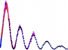

Refl1D v0.6.19 documentation
Python Module Index
Contents
Python Module Index
r
r
refl1d
refl1d.abeles
refl1d.bspline
refl1d.cheby
refl1d.cli
refl1d.dist
refl1d.errors
refl1d.experiment
refl1d.fitproblem
refl1d.fitservice
refl1d.fitters
refl1d.freeform
refl1d.fresnel
refl1d.garefl
refl1d.initpop
refl1d.instrument
refl1d.magnetic
refl1d.mapper
refl1d.material
refl1d.materialdb
refl1d.model
refl1d.mono
refl1d.mystic.bounds
refl1d.mystic.formatnum
refl1d.mystic.parameter
refl1d.ncnrdata
refl1d.numpyerrors
refl1d.partemp
refl1d.polymer
refl1d.probe
refl1d.profile
refl1d.pytwalk
refl1d.quasinewton
refl1d.random_lines
refl1d.rebin
refl1d.reflectivity
refl1d.reflmodule
refl1d.resolution
refl1d.simplex
refl1d.snsdata
refl1d.staj
refl1d.stajconvert
refl1d.stitch
refl1d.support
refl1d.util
refl1d.wsolve
Contents